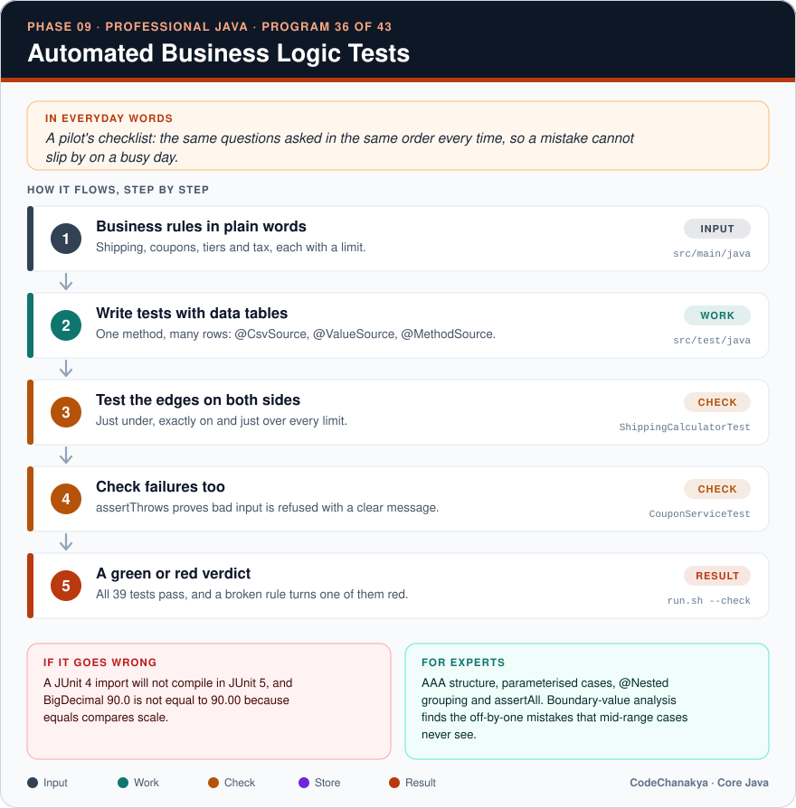

Phase 09 · Professional Java · Program 36 of 43
Automated Business Logic Tests
The problem
A shop prices orders with rules people argue about, and every rule has an edge. Is a subtotal of exactly 999 free? A person cannot re-check forty edges after every change. A computer can, in moments.
Shipping, coupons, tiers and tax are tested with JUnit 5: data tables with @CsvSource, grouped tests with @Nested, failures with assertThrows, and a boundary on both sides of every limit.
See the flow
The whole program as one picture. Read it top to bottom; the colour of each card says what kind of step it is.


If you are new to coding
A pilot's checklist: the same questions asked in the same order every time, so a mistake cannot slip by on a busy day.
If you are learning
Follow the numbered cards from top to bottom. Open the file named on each card, run the program, and match its output to the last card.
If you are experienced
AAA structure, parameterised cases, @Nested grouping and assertAll. Boundary-value analysis finds the off-by-one mistakes that mid-range cases never see.
Text version of the flow
- Business rules in plain words (input): Shipping, coupons, tiers and tax, each with a limit.
- Write tests with data tables (work): One method, many rows: @CsvSource, @ValueSource, @MethodSource.
- Test the edges on both sides (check): Just under, exactly on and just over every limit.
- Check failures too (check): assertThrows proves bad input is refused with a clear message.
- A green or red verdict (result): All 39 tests pass, and a broken rule turns one of them red.
Read in this order
- 1ShippingCalculator.javaThe first rule, with its boundaries.
- 2ShippingCalculatorTest.javaOne method, seven cases.
- 3CouponServiceTest.java@Nested groups and assertThrows.
- 4OrderPricerTest.javaassertAll, @MethodSource and @EnumSource.
The code
package com.codechanakya.pricing; import java.math.BigDecimal; /** * Works out the delivery charge. * * <p>Standard delivery costs 40 plus 20 for every started kilogram, and is free when the * subtotal is 999 or more. Express delivery adds a flat 100 and is never free. */ public class ShippingCalculator { static final BigDecimal FREE_FROM = Money.of("999"); static final BigDecimal BASE = Money.of("40"); static final BigDecimal PER_KG = Money.of("20"); static final BigDecimal EXPRESS_EXTRA = Money.of("100"); public BigDecimal cost(BigDecimal subtotal, int weightGrams, boolean express) { if (weightGrams <= 0) { throw new IllegalArgumentException("Weight must be positive, but was " + weightGrams); } int startedKilos = (weightGrams + 999) / 1000; BigDecimal standard = BASE.add(PER_KG.multiply(BigDecimal.valueOf(startedKilos))); if (express) { return Money.round(standard.add(EXPRESS_EXTRA)); } return subtotal.compareTo(FREE_FROM) >= 0 ? Money.of("0") : Money.round(standard); } }
package com.codechanakya.pricing; import static org.junit.jupiter.api.Assertions.assertEquals; import static org.junit.jupiter.api.Assertions.assertThrows; import java.math.BigDecimal; import org.junit.jupiter.api.BeforeEach; import org.junit.jupiter.api.DisplayName; import org.junit.jupiter.api.Test; import org.junit.jupiter.params.ParameterizedTest; import org.junit.jupiter.params.provider.CsvSource; import org.junit.jupiter.params.provider.ValueSource; @DisplayName("ShippingCalculator") class ShippingCalculatorTest { private ShippingCalculator calculator; @BeforeEach void setUp() { // JUnit creates a new test object for every test, so each test starts clean. calculator = new ShippingCalculator(); } @ParameterizedTest(name = "standard, {1} g, subtotal {0} costs {2}") @CsvSource({ // subtotal, grams, expected cost "100.00, 1, 60.00", // 1 g still counts as a started kilogram "100.00, 1000, 60.00", // exactly 1 kg is still one kilogram "100.00, 1001, 80.00", // one gram over starts the second kilogram "100.00, 2500, 100.00", "998.99, 500, 60.00", // just under the free-shipping line "999.00, 500, 0.00", // exactly on the line is free "5000.00, 9000, 0.00" }) @DisplayName("standard delivery") void standardDelivery(String subtotal, int grams, String expected) { assertEquals(new BigDecimal(expected), calculator.cost(new BigDecimal(subtotal), grams, false)); } @ParameterizedTest @CsvSource({ "100.00, 500, 160.00", "5000.00, 500, 160.00", // express is never free "100.00, 2500, 200.00" }) @DisplayName("express delivery adds a flat 100 and is never free") void expressDelivery(String subtotal, int grams, String expected) { assertEquals(new BigDecimal(expected), calculator.cost(new BigDecimal(subtotal), grams, true)); } @ParameterizedTest @ValueSource(ints = {0, -1, -500}) @DisplayName("a weight that is not positive is rejected") void badWeights(int grams) { IllegalArgumentException error = assertThrows(IllegalArgumentException.class, () -> calculator.cost(new BigDecimal("100"), grams, false)); assertEquals("Weight must be positive, but was " + grams, error.getMessage()); } @Test @DisplayName("the answer always has two decimals") void twoDecimals() { assertEquals(2, calculator.cost(new BigDecimal("100"), 500, false).scale()); } }
Only the key files are shown. The rest are in the repository.
Run it
$ ./run.sh --check
Downloading junit-platform-console-standalone-1.11.4.jar (one time only)...
...
39 tests successful, 0 tests failed
OK: all tests passed
The last two lines are what a passing run should end with. They are shown as expected, not as captured output: the real JUnit jar could not be downloaded where this program was written. The code was run on OpenJDK 21.0.13 on Linux, and the 39 tests passed on a stand-in for the JUnit 5 API written only for checking. They have not been run on real JUnit or Maven yet.
Try it yourself
- BeginnerTest FLAT50 for a gold customer.
- BeginnerTest near-miss coupon codes.
- BeginnerRun one test class.
- IntermediateWrite the test first for a 20 kg limit.
- IntermediateRewrite a test with @MethodSource.
- ChallengeBreak the code on purpose and see what the tests say.
Hints and solutions are in the exercises and solutions folders. Try first.
Break it on purpose
Three files: a JUnit 4 import, BigDecimal scale in assertEquals, and tests that depend on each other. The README in the broken folder explains each one.